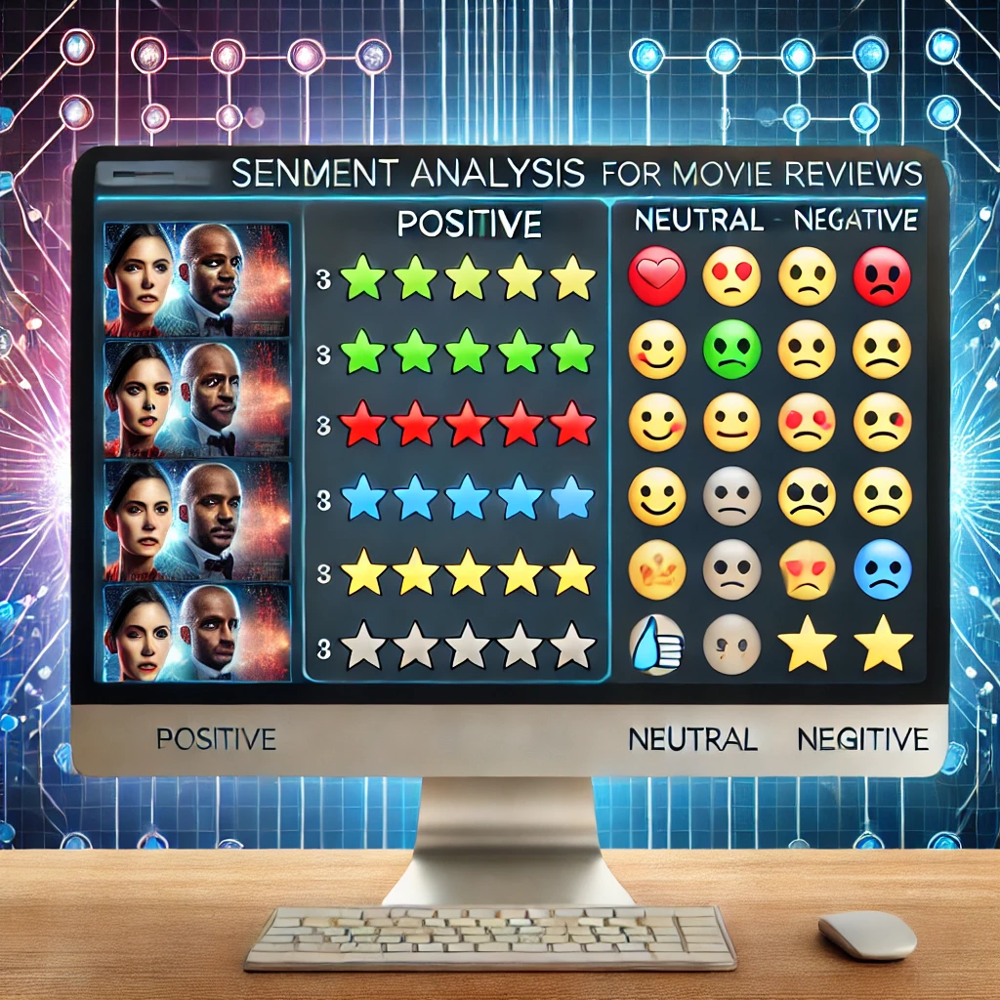

This project proposes a novel approach to fashion recommendation systems
by relying solely on image-based similarity algorithms. The goal is to suggest visually similar products and complete the look
based on color palettes, textures, patterns, and shapes. The project is divided into three main task categories, namely object detection,
visual similarity search, and product/outfit recommendation. The proposed system addresses computational challenges by employing ANNOY to
reduce similarity search computation time. It also solves the challenge of evaluating the recommender system through user feedback surveys.
The system aims to enhance customer experience by providing visually appealing recommendations.
The project focuses on identifying and fine-tuning various Text-to-SQL conversion approaches to accurately translate
natural language questions into SQL queries, comparing their performance to determine the most effective models.
The goal is to enhance translation accuracy across both simple and complex queries.

This project aims to build a virtual assistant powered by RASA 3.0 which provides information on COVID-19 and real-time statistics of COVID-19 around the globe.
The bot integrates NLP, NLU and Automatic Speech Recognition to answer COVID-19 related FAQs.
This project aims to develop an image captioning model using neural networks. Our approach utilizes DenseNet for feature extraction, over the original CNN model employed
in "Show and Tell" work.
Additionally, to enhance the model's performance, we introduced modifications to the original architecture. Specifically, we incorporated image feature embeddings into the LSTM output,
followed by passing them through fully connected layers. This adaptation led to an improvement in the BLEU score, indicating a stronger correlation between the image and the generated captions.

The project presents a comparative analysis of various machine learning and deep learning models for sentiment analysis on movie reviews, using classification techniques like KNN, SVM, and CNN
to discern positive and negative sentiments. The study incorporates a range of preprocessing steps, evaluation metrics, and a dataset containing highly polar reviews, aiming to determine the
most effective models in predicting sentiment accurately.
Inference optimization is crucial for enhancing the efficiency and speed of deep learning models, especially when deploying them in real-world applications. In this project, I have employed a pre-trained YOLOv8 model sourced from Ultralytics and customized it to recognize various fashion items, creating what I refer to as the baseline model. The performance of this model was rigorously evaluated using metrics such as box loss, class loss, direction/offset loss, mean Average Precision at IoU=0.50 (mAP50), and mean Average Precision at IoU=0.50 to 0.95 (mAP50-95). Subsequently, I applied advanced inference acceleration techniques including TorchScript and ONNX to further enhance model efficiency. The culmination of this project involved a comparative analysis of the model sizes and inference durations across the baseline, TorchScript, and ONNX models.
Optimized inference reduces computational resource requirements, enabling models to run faster and consume fewer computational resources. PyTorch provides powerful tools to achieve inference optimization, such as quantization and TorchScript. Quantization allows for the conversion of high-precision floating-point models to low-precision representations, reducing memory and computation requirements. TorchScript, on the other hand, enables the compilation of PyTorch models into a serialized format, which can be executed more efficiently and integrated into various deployment environments, making it essential for efficient and scalable model inference in production settings.